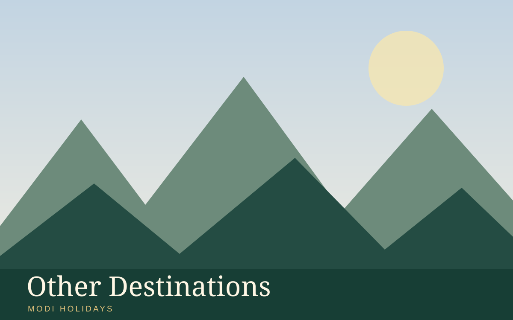

Places covered
Yamunotri → Gangotri → Kedarnath → Badrinath
Day-wise sightseeing itinerary
Suggested itinerary. Exact travel times, hotel availability, entry tickets and activities are confirmed in your quotation.
Day 1
Arrival in Yamunotri. Meet the local representative (if arranged), transfer to the hotel and check in. Depending on arrival time, visit Yamunotri Temple darshan via designated trek/pony/palki route (subject to registration and access). Overnight in Yamunotri.
Day 2
Visit Yamunotri Temple darshan via designated trek/pony/palki route (subject to registration and access). Explore nearby streets and local food or craft markets if time permits. Overnight in Yamunotri.
Day 3
Visit Yamunotri Temple darshan via designated trek/pony/palki route (subject to registration and access); allow time for local photography and independent exploration. Continue sightseeing in Yamunotri at a relaxed pace, with stops for meals. Overnight in Yamunotri.
Day 4
Visit Yamunotri Temple darshan via designated trek/pony/palki route (subject to registration and access); allow time for local photography and independent exploration. Explore nearby streets and local food or craft markets if time permits. Overnight in Yamunotri.
Day 5
Travel from Yamunotri to Gangotri (journey time to be confirmed). After arrival, Visit Gangotri Temple darshan and Bhagirathi riverfront (seasonal access). Explore nearby streets and local food or craft markets if time permits. Overnight in Gangotri.
Day 6
Visit Gangotri Temple darshan and Bhagirathi riverfront (seasonal access); allow time for local photography and independent exploration. Continue sightseeing in Gangotri at a relaxed pace, with stops for meals. Overnight in Gangotri.
Day 7
Travel from Gangotri to Kedarnath (journey time to be confirmed). After arrival, Visit Kedarnath Temple darshan; trekking or authorised helicopter option subject to weather and availability. Explore nearby streets and local food or craft markets if time permits. Overnight in Kedarnath.
Day 8
Visit Kedarnath Temple darshan; trekking or authorised helicopter option subject to weather and availability; allow time for local photography and independent exploration. Continue sightseeing in Kedarnath at a relaxed pace, with stops for meals. Overnight in Kedarnath.
Day 9
Travel from Kedarnath to Badrinath (journey time to be confirmed). After arrival, Visit Badrinath Temple darshan and Tapt Kund area (seasonal access). Explore nearby streets and local food or craft markets if time permits. Overnight in Badrinath.
Day 10
Visit Badrinath Temple darshan and Tapt Kund area (seasonal access); allow time for local photography and independent exploration. Continue sightseeing in Badrinath at a relaxed pace, with stops for meals. Overnight in Badrinath.
Day 11
After breakfast, check out from Badrinath and transfer to the agreed departure point. Plan sufficient time for road conditions, security checks and onward travel.
Accommodation
Comfort / Deluxe hotels (or similar, subject to availability)
Meals and transport
Meals: Meal plan confirmed in the final quotation
Transport: Private transfers / sightseeing vehicle as specified in your quotation
Proposed inclusions
- Suggested day-wise sightseeing programme
- Hotel options in the selected category
- Transfer and vehicle options on request
- Assistance with customised travel planning
Proposed exclusions
- Flights and train tickets unless expressly included
- Attraction tickets, activities and permits unless confirmed
- Personal expenses, tips and incidental charges
- Any service not listed in the final written quotation
Frequently asked questions
Can this itinerary be customised?
Yes. Modi Holidays can tailor the route, hotel category, pace and sightseeing to your travel dates and preferences.
Are hotels and departure dates confirmed?
No. Hotel names, transport, inclusions and dates are proposed until confirmed in writing after your enquiry.